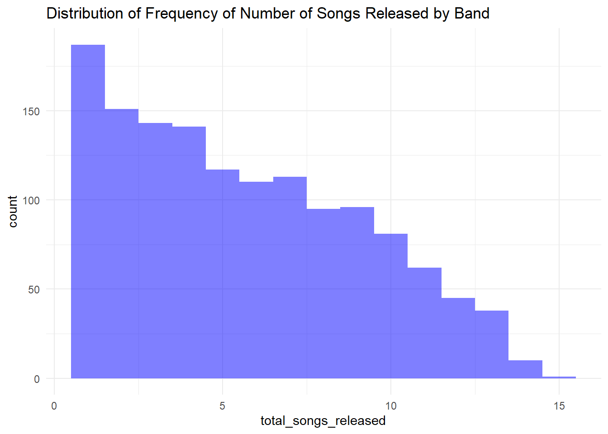
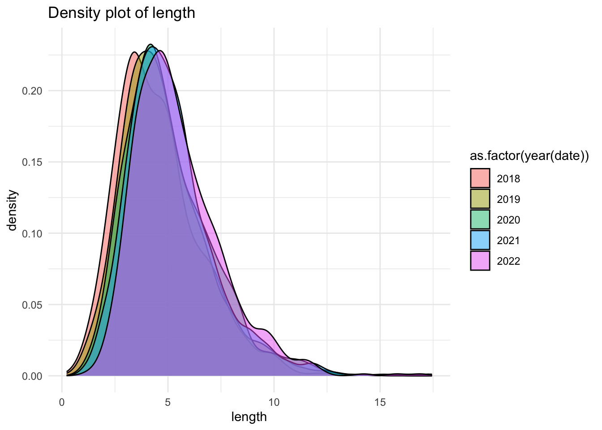
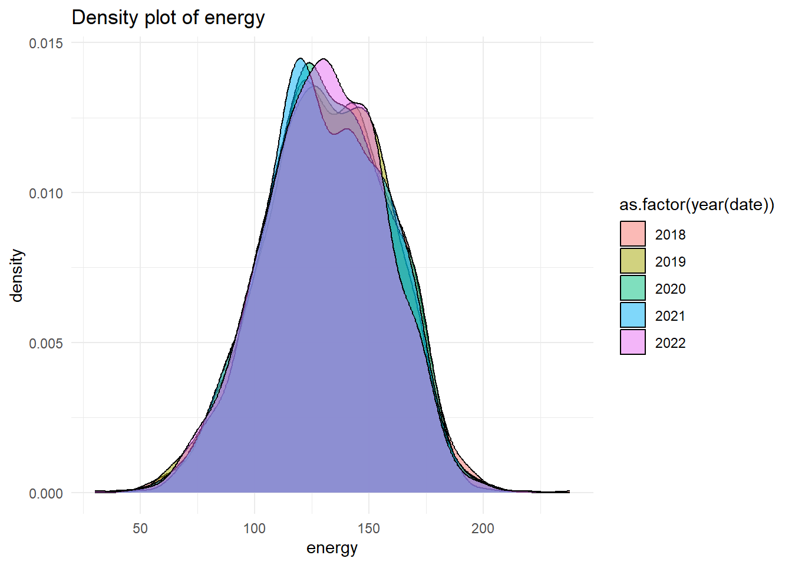
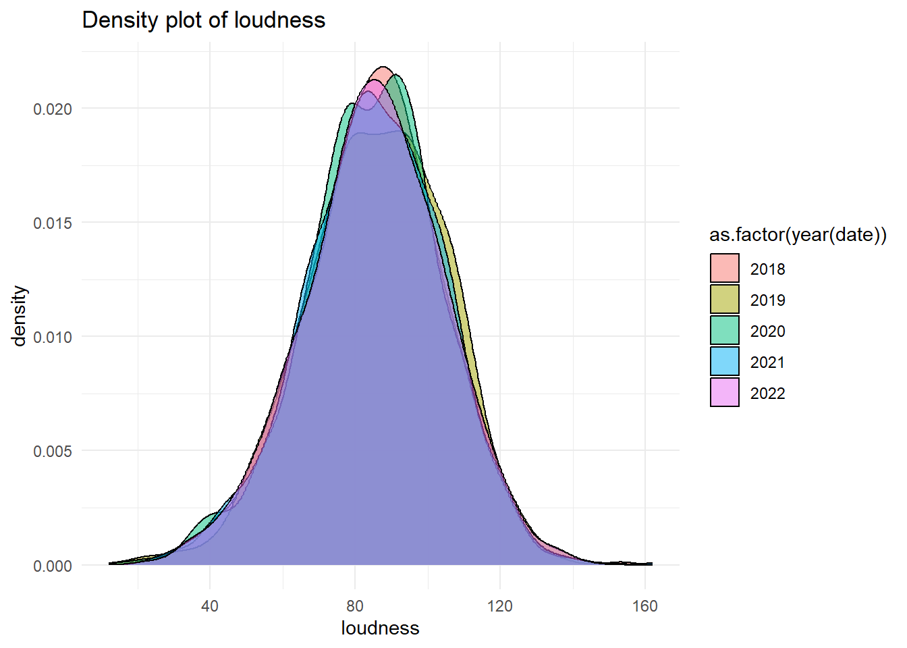

The exploratory data analysis (EDA) is conducted to motivate the model building process. Based on the EDA, the two models are proposed to balance between the complexity to solve the problem and the ease of bringing the model to production.
For Model A: - Assuming we are to predict the whether a new song will sell more than two million copies we run a random forest regression where copies_sold is the target and the features are:
loudness, energy, length
one-hot encoding of genre
days_since_launch_date (new feature)
For Model B - Assuming the model is to evaluate the popularity of a genre over sequential time periods historically and not used to forecast future popularity (which will require a time-series approach). Based off the EDA we can use multivariate regression specified below.
Where \(y\_{it}\) is the copies sold for song \(i\) in genre \(g\) at time \(t\), \(X\_{it}\) are the features, \(\alpha\_g\) is the genre fixed effect, \(\Y_d\) is the time fixed effect for each year, and \(\epsilon\_{it}\) is the error term.
Consideration: Using song-level data at the level may result in too much noise, can aggregate at weekly level to run panel model. A mixed-effects model can be explored to capture the hierarchical structure of data, however EDA suggests there may insufficient observations at the band level.
Data Assumptions:
copies_sold is the amount sold since release date recorded at the end of the data set.
1. Import data and load required packages
# Install pacman if not already installedif (!require("pacman")) install.packages("pacman")
Loading required package: pacman
# Clear workspace rm(list=ls())# Load the required packages using pacmanpacman::p_load(tidyverse,ggplot2, psych, ggcorrplot, highcharter,plotly,viridis)# Read in data set and parse date column as date objects songs_df <-read.csv("data/lifeblood_interview_dataset.csv") %>%mutate(date =as.Date(date))# Check information of data frame print(head(songs_df))
'data.frame': 10458 obs. of 8 variables:
$ band_id : int 808 1143 1263 744 606 1022 807 446 833 861 ...
$ genre : chr "Psychedelictrance" "Gothicsynth" "Indiedisco" "Folktronica" ...
$ song_id : int 6534 9234 10168 6017 4805 8189 6514 3577 6719 6955 ...
$ date : Date, format: "2018-01-01" "2018-01-01" ...
$ loudness : int 79 78 99 92 72 71 79 73 118 106 ...
$ length : num 3.35 4.91 5.89 5.64 5.84 ...
$ energy : int 137 86 159 143 144 85 156 NA NA NA ...
$ copies_sold: num 0.391 0.543 0.723 0.974 1.093 ...
NULL
#| output: false#| warning: false
1.1 Data preprocessing: Check for Duplicates
From inspection there appears to be 205 duplicates of songs
# Assert if unique count of songs matches number of rows print(nrow(songs_df) ==length(unique(songs_df)))
[1] FALSE
print(length(unique(songs_df$songs_id)))
[1] 0
# Duplicate songs exist, return the rows with the duplicate songs duplicate_songs_df <- songs_df %>%filter(duplicated(song_id) |duplicated(song_id, fromLast=TRUE ))# Verify these songs are exact duplicates by checking other columns match the duplicatesduplicate_songs_df_verified <- duplicate_songs_df %>%group_by(song_id) %>%#If all columns have a distinct count of 1 for a particular song_id, it indicates that the duplicate songs are exact duplicates across all columns.summarize(across(everything(), ~n_distinct(.)))
1.1 Data preprocessing: Check for missing values
There are 2329 missing values for energy in column. We make the assumption that these random values are completely missing at random (MCAR)
For future exploration, employ statistical test or ask data owner whether the missing values are missing at random (MAR), missing completely at random (MCAR), or missing not at random (MNAR).
# Count the number of NULL and NA values column wise missing_values_df <- songs_df %>%summarise_all(~sum(is.na(.)))
1.1 Data preprocessinge: Check for outliers
We first remove duplicate values and remove missing values given our MCAR assumption. Then plot the distributions of each feature.
From visually inspecting the distributions, there appears to be negative observations in the ‘length’ variable which is physically impossible. Assuming this a data error, we remove these values moving forward. Again, with more time we can impute these incorrect values or ask the data owner for clarification.
# Remove duplicates and missing valuescleaned_songs_df <- songs_df %>%distinct() %>%filter(!is.na(energy))# Plot the smoothed distribution of continuous variables variables <-c("copies_sold", "length", "energy", "loudness")for (vars in variables) { plot <-ggplot(cleaned_songs_df, aes(x =!!sym(vars))) +geom_density(fill ="blue", alpha =0.5) +ggtitle(paste("Density plot of", vars)) +theme_minimal()print(plot)}
# Filter length rows to contain values greater than 0 cleaned_songs_df <-cleaned_songs_df %>%filter(length >0)
2.0 Exploratory data analysis: Calculate summary statistics
# Calculate summary statistics for continuous variable and return data frame describe(cleaned_songs_df %>%select(all_of(variables))) %>%select(mean, median, min, max, range, sd)
mean median min max range sd
copies_sold 0.80 0.60 0.05 5.68 5.63 0.68
length 4.99 4.65 0.22 17.45 17.23 2.07
energy 131.31 131.00 30.00 238.00 208.00 26.56
loudness 85.19 86.00 12.00 162.00 150.00 19.20
2.1 Exploratory data analysis: Investigate temporal patterns across total songs at quarterly and yearly frequency to motivate what temporal features to include
A key observation there is a overall downward trend in the total amount of copies sold. This suggests copies_sold reflect the units sold since launch date of song. From here we assume the copies_sold variable is a cumulative sum of the copies sold since the launch date of the song.
# Plot time series of total songs sold at the quarterly frequencysongs_quarterly_series_df <-cleaned_songs_df %>%mutate(year_quarter =paste0(year(date), "-Q", quarter(date))) %>%group_by(year_quarter) %>%summarize(total_songs_sold =sum(copies_sold))hchart(songs_quarterly_series_df, "line", hcaes(x = year_quarter, y = total_songs_sold)) %>%hc_title(text ="Quarterly Total Songs Sold Over Time") %>%hc_xAxis(title =list(text ="Year-Quarter")) %>%hc_yAxis(title =list(text ="Total Songs Sold")) %>%hc_tooltip(valueDecimals =0)
# Plot time series of total songs sold at the yearly frequencysongs_yearly_series_df <-cleaned_songs_df %>%mutate(year =format(date, "%Y")) %>%group_by(year) %>%summarize(total_songs_sold =sum(copies_sold))# Create the highcharter plot objecthchart(songs_yearly_series_df, "line", hcaes(x = year, y = total_songs_sold)) %>%hc_title(text ="Yearly Total Songs Sold Over Time") %>%hc_xAxis(title =list(text ="Year")) %>%hc_yAxis(title =list(text ="Total Songs Sold")) %>%hc_tooltip(valueDecimals =0)
# Plot time series of total songs sold by genre at the quarterly frequencysongs_genre_quarterly_series_df <- cleaned_songs_df %>%mutate(year_quarter =paste0(year(date), "-Q", quarter(date))) %>%group_by(year_quarter, genre) %>%summarize(total_songs_sold =sum(copies_sold))
`summarise()` has grouped output by 'year_quarter'. You can override using the
`.groups` argument.
# Create the highcharter plot objecthchart(songs_genre_quarterly_series_df, "line", hcaes(x = year_quarter, y = total_songs_sold, group = genre)) %>%hc_title(text ="Quarterly Total Songs Sold Over Time by Genre") %>%hc_xAxis(title =list(text ="Year-Quarter")) %>%hc_yAxis(title =list(text ="Total Songs Sold")) %>%hc_tooltip(valueDecimals =0) %>%hc_legend(title =list(text ="Genre"))
2.2 Investigate temporal patterns - Observe if there is seasonality present at weekly, monthly and quarterly frequency
Objective: To see whether it is important include seasonal dummies for the models, we plot the seasonal plots of copies_sold at each frequency.
Findings: There appears to no strong visual evidence of seasonality, note that there is a dip in week 53 because there are relatively less rows in week 53.
# Plot the seasonal plots at the weekly, monthly and quarterly level for all the years # Add columns for week, quarter, month and year songs_time_index_df <- cleaned_songs_df %>%mutate(year =year(date), quarter =quarter(date),month =month(date),week =week(date))# Define the frequencies and their corresponding columnsfrequencies <-c("week", "month", "quarter")frequency_cols <-list(week ="week", month ="month", quarter ="quarter")# Loop through each frequency and generate plotsfor (freq in frequencies) { col_name <- frequency_cols[[freq]]# Aggregate data at the current frequency aggregated_data <- songs_time_index_df %>%group_by(year, !!sym(col_name)) %>%summarize(total_copies_sold =round(sum(copies_sold)))# Generate plot for the current frequency plot <-hchart(aggregated_data, "line", hcaes(x =!!sym(col_name), y = total_copies_sold, group = year)) %>%hc_colors(colors =viridis(length(unique(aggregated_data$year)))) %>%hc_title(text =paste(toupper(freq), "Copies Sold by Year")) %>%hc_xAxis(title =list(text =toupper(freq)),labels =list(step =2)) %>%hc_yAxis(title =list(text ="Total Copies Sold")) %>%hc_legend(title =list(text ="Year")) %>%hc_tooltip(crosshairs =TRUE, shared =TRUE) %>%hc_exporting(enabled =TRUE)# Print the plotprint(plot)}
`summarise()` has grouped output by 'year'. You can override using the
`.groups` argument.
`summarise()` has grouped output by 'year'. You can override using the
`.groups` argument.
`summarise()` has grouped output by 'year'. You can override using the
`.groups` argument.
2.2 Investigate temporal patterns - Plot the total loudness, energy and length at the quarterly level
Findings:
All series appears to be quite stable across time where total_energy, total_loudness exhibit a slight downward trend.
All series exhibit a uptick at towards the end of the time series
There is high correlation amongst the features
# Aggreate target and features at each frequency and plot # Create time series df at the monthly frequencyfeatures_weekly_df <- cleaned_songs_df %>%mutate(date =format(date, "%Y-%W")) %>%group_by(date) %>%summarize(total_copies_sold =sum(copies_sold),total_loudness =sum(loudness),total_energy =sum(energy),total_length =sum(length)) %>%arrange(date) # Create time series df at the monthly frequencyfeatures_monthly_df <- cleaned_songs_df %>%mutate(date =format(date, "%Y-%m")) %>%group_by(date) %>%summarize(total_copies_sold =sum(copies_sold),total_loudness =sum(loudness),total_energy =sum(energy),total_length =sum(length)) %>%arrange(date) # Create time series df at the quarterly frequencyfeatures_quarterly_df <-cleaned_songs_df %>%mutate(date =paste0(year(date), "-Q", quarter(date))) %>%group_by(date) %>%summarize(total_copies_sold =sum(copies_sold),total_loudness =sum(loudness),total_energy =sum(energy),total_length =sum(length)) %>%arrange(date)# Create a list to store the dataframesfeatures_list <-list(weekly = features_weekly_df,monthly = features_monthly_df,quarterly = features_quarterly_df)# Loop through the frequencies and create the plotsfor (freq innames(features_list)) { features_df <- features_list[[freq]] # Corrected variable name plot <-hchart(features_df, "line", hcaes(x = date, y = total_loudness), name ="Total Loudness") %>%hc_add_series(features_df, "line", hcaes(x = date, y = total_energy), name ="Total Energy") %>%hc_add_series(features_df, "line", hcaes(x = date, y = total_length), yAxis =1, name ="Total Length") %>%hc_add_series(features_df, "line", hcaes(x = date, y =10*total_copies_sold), yAxis =1, name ="Total Copies Sold") %>%hc_title(text =paste("Features and target", freq)) %>%hc_xAxis(title =list(text ="Date")) %>%hc_yAxis_multiples(list(title =list(text ="Loudness/Energy"),opposite =FALSE),list(title =list(text ="Length/Copies Sold"),opposite =TRUE)) %>%hc_tooltip(valueDecimals =0)print(plot)}
2.3 EDA: Perform different counts on the data relating to target
We perform the following counts:
Check: Number of songs that sold above 2 million and the count to see if there is class imbalance.
Findings: As the proportion of songs sold above 2 million only covers ~6% of the data, recommend using regression approach.
Check: Total count of songs released in each year in aggregate and by genre.
Findings:
Aggregate songs released in year is overall decreasing
Folktronica features releases the most songs by year consistent with the amount of copies sold
Check: Total count of songs released by band in across all time to see if there are any data anomalies and whether it’s feasible to train a model at the band level
Findings: There are 1390 unique bands and 7970 observations, where most bands have released less than 5 songs. Insufficient degrees of freedom to estimate a statistical model, pivot to genre level.
# Calculate the proportion of song that sold above 2 million proportion_songs_above_2m <-cleaned_songs_df %>%summarize(proportion_songs_above_2m =sum(copies_sold >=2) /nrow(.))# Calculate total count of songs released in each year in aggregate by genre songs_yearly_count_df <-cleaned_songs_df %>%mutate(year =year(date)) %>%group_by(year, genre) %>%summarize(total_songs_released =n())
`summarise()` has grouped output by 'year'. You can override using the
`.groups` argument.
# Create a stacked bar chart across time of the count songs for each genre hchart(songs_yearly_count_df, "column", hcaes(x = year, y = total_songs_released, group = genre)) %>%hc_title(text ="Yearly Total Songs Released by Genre") %>%hc_xAxis(title =list(text ="Year")) %>%hc_yAxis(title =list(text ="Total Songs Released")) %>%hc_tooltip(valueDecimals =0)
# Create a stacked bar chart across time of the count songs for each genrehchart(songs_yearly_count_df, "column", hcaes(x = year, y = total_songs_released, group = genre), stacking ="normal") %>%hc_title(text ="Yearly Total Songs Released by Genre") %>%hc_xAxis(title =list(text ="Year")) %>%hc_yAxis(title =list(text ="Total Songs Released")) %>%hc_tooltip(valueDecimals =0)
# Calculate count of songs released by band in across all time songs_band_count_df <- cleaned_songs_df %>%group_by(band_id) %>%summarise(total_songs_released =n()) %>%arrange(desc(total_songs_released))# Plot distribution of frequency on number of songs released at band level ggplot(songs_band_count_df, aes(x = total_songs_released)) +geom_histogram(binwidth =1, fill ="blue", alpha =0.5) +ggtitle("Distribution of Frequency of Number of Songs Released by Band") +theme_minimal()

# Caclulate total count of unique bandsunique_bands_count <- cleaned_songs_df %>%summarize(unique_bands =n_distinct(band_id))
2.4 EDA: Plot distributions of each features across year
Investigate if there are any temporal patterns/anomalies at the yearly levels. Findings: The distributions of the continuous features are relatively stable across the years.
# Plot the smoothed distributions of the continuous features for each year for (vars in variables) { plot <-ggplot(cleaned_songs_df, aes(x =!!sym(vars), fill =as.factor(year(date)))) +geom_density(alpha =0.5) +ggtitle(paste("Density plot of", vars)) +theme_minimal()print(plot)}



# Plot the violin plots of each continuous feature for each year for (vars in variables) { plot <-plot_ly(cleaned_songs_df, x =~as.factor(year(date)), y =~get(vars), type ="violin",box =list(visible =TRUE),meanline =list(visible =TRUE),hoverinfo ="text" ) %>%layout(title =paste("Violin Plot of", vars),xaxis =list(title ="Year"),yaxis =list(title = vars),showlegend =FALSE)print(plot)}
3.0 Feature engineering: Create new features
Before continuing eda, we build some new features
To build model to predict the number of copies sold, we create the following features:
Days since launch date of song
# Assume record day is last day of data set record_date =max(cleaned_songs_df$date)# Create days since launch feature cleaned_songs_df <- cleaned_songs_df %>%mutate(days_since_launch =as.integer(difftime(record_date, date, units ="days")))# Append days_since_launch to variables vector variables <-c(variables, "days_since_launch")aggregated_variables <-names(features_weekly_df)[2:5]
3.1 EDA with new Features: Plot correlation and interaction of features with target variable
Check: Investigate the correlation amongst features to understand feature importance.
Findings:
There appears to be low correlation at the song level but high correlation at the weekly level.
For model A we need to model it on the song level
For model B when modelling for the genre of songs, consider modelling at weekly frequency
In particular length seems to have low correlation with the target variable, copies_sold and other features
There appears to be a negative relationship between copies sold and length and loudness at the song level and positive relationship at with energy.
# Calculate correlation matrix for continuous variables at different levels# Correlation matrix at the song level correlation_matrix_song_level <-cor(cleaned_songs_df %>%select(all_of(variables)))# Correlation matrix at the weekly levelcorrelation_matrix_weekly <-cor(features_weekly_df %>%select(all_of(aggregated_variables)))# Plot correlation matrices ggcorrplot(correlation_matrix_song_level, hc.order =TRUE, type ="upper",lab =TRUE)
ggcorrplot(correlation_matrix_weekly, hc.order =TRUE, type ="upper",lab =TRUE)
# Define the variables and their corresponding labelsplot_vars <-c("energy", "length", "loudness")labels <-c("Energy", "Length", "Loudness")# Loop through the variables and create the scatter plotsfor (i inseq_along(plot_vars)) { var <- plot_vars[i] label <- labels[i] plot <-ggplot(data = cleaned_songs_df %>%sample_n(2000),aes(x =!!sym(var), y = copies_sold, color = genre, size = days_since_launch)) +geom_point(alpha =0.7) +geom_smooth(method ="loess", formula = y ~ x, color ="black", size =1) +scale_color_viridis(discrete =TRUE) +labs(x = label, y ="Copies Sold", title =paste("Scatter Plot of", label, "vs. Copies Sold")) +theme_minimal() +theme(plot.title =element_text(hjust =0.5),legend.position ="bottom",legend.box ="vertical",legend.margin =margin(0, 0, 0, 0),legend.box.margin =margin(0, 0, 0, 0),legend.text =element_text(size =8),legend.key.size =unit(0.5, "cm"),plot.margin =unit(c(1, 1, 1.5, 1), "cm") ) +guides(color =guide_legend(nrow =2, byrow =TRUE, override.aes =list(size =3)))print(plot)}
Warning: Using `size` aesthetic for lines was deprecated in ggplot2 3.4.0.
ℹ Please use `linewidth` instead.
3.2 Investigate to existence of interaction between features and target variable
Check: Whether there is an interaction between energy and loudness with length to copies_sold. Rationale: A song that is high energy/loud that is long may cause fatigue in listeners reducing copies sold.
Findings:
# Creating quartile bins for energy, loudness and lengthinteraction_df <- cleaned_songs_df %>%mutate(energy_bin =ntile(energy, 4),loudness_bin =ntile(loudness, 4),length_bin =ntile(length, 4))# Create the interaction plot for loudness and energyinteraction.plot(x.factor = interaction_df$loudness_bin,trace.factor = interaction_df$length_bin,response = interaction_df$copies_sold,fun = mean,type ="b",xlab ="Loudness",col =c("blue", "red", "green", "purple"),ylab ="Copies_sold",legend =TRUE,trace.label ="Length",main ="Interaction Plot")
# Create the interaction plot for energy and length interaction.plot(x.factor = interaction_df$energy_bin,trace.factor =as.factor(interaction_df$length_bin),response = interaction_df$copies_sold,fun = mean,type ="b",xlab ="Loudness",col =c("blue", "red", "green", "purple"),ylab ="Copies_sold",legend =TRUE,trace.label ="Length",main ="Interaction Plot")